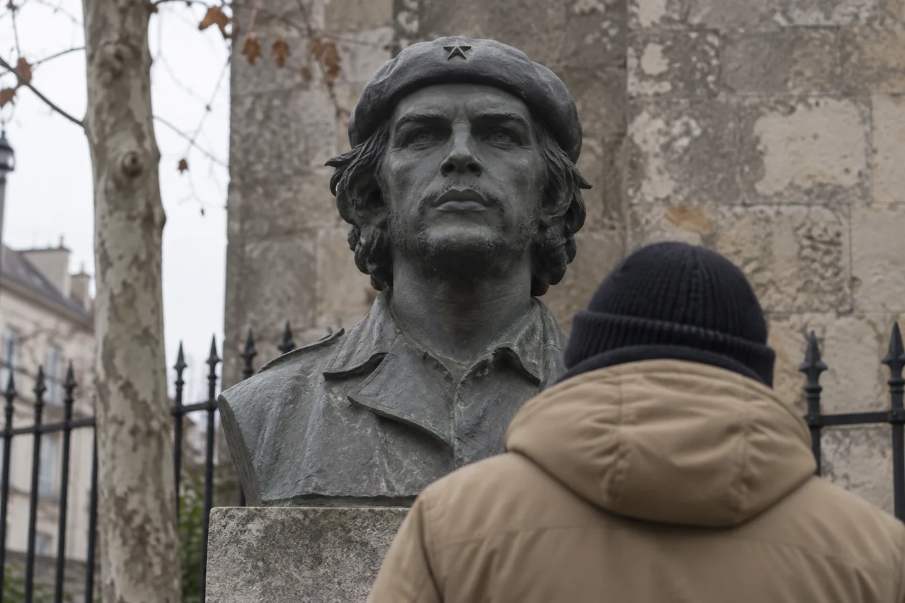
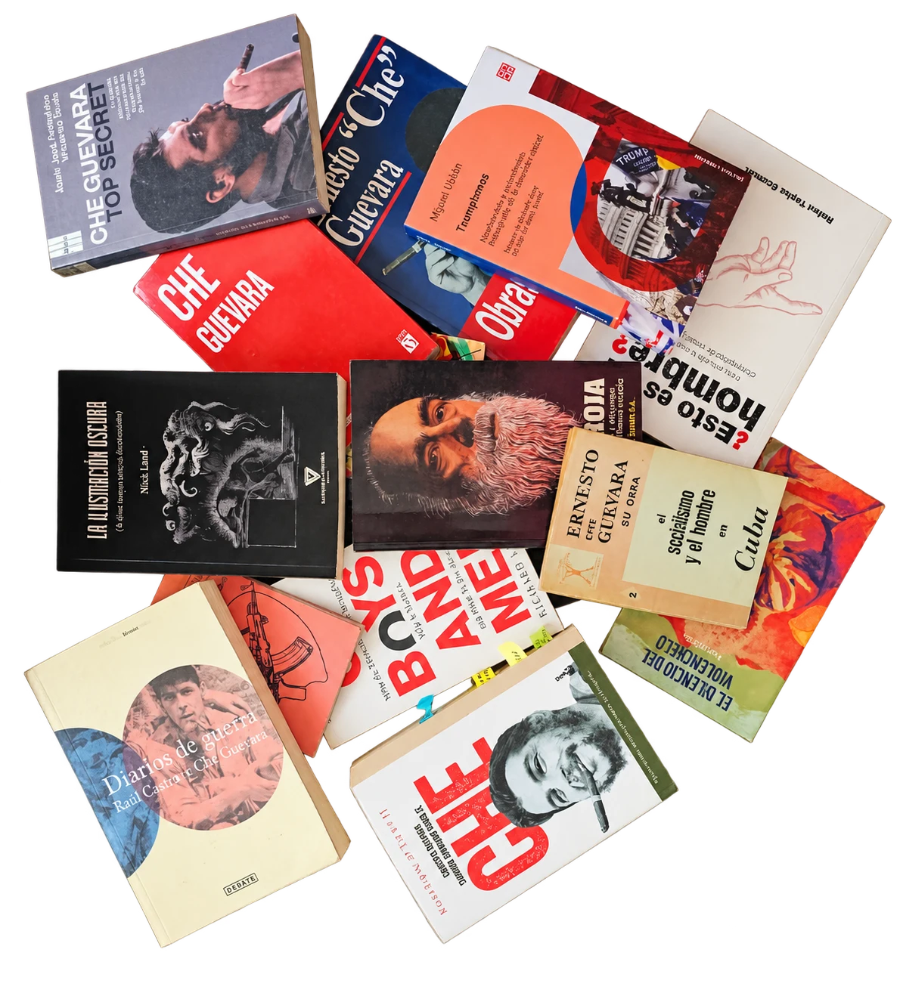

Emergencia
Una conversación imposible

Un encuentro imposible entre un joven del presente y una conciencia reconstruida del Che. La investigación profundiza el dispositivo escénico abierto en Pasolini.
¿Qué puede decirnos una figura del pasado?
En un museo del futuro, un joven del presente se encuentra con una reconstrucción de Ernesto Che Guevara mediante inteligencia artificial. La distancia entre sus mundos abre una conversación sobre las convicciones, las contradicciones y el tiempo que les ha tocado vivir.
Emergencia profundiza el dispositivo de ¿De quién es esta época, Pasolini?: la escena se convierte en un lugar donde una conciencia histórica es interpelada por alguien que vive otro presente.
Los libros sobre la mesa
La investigación reúne lecturas sobre el Che, nuevas derechas, experiencias políticas y formas contemporáneas de imaginar al ser humano. Estos son algunos de los ejemplares que acompañan el trabajo.

Una obra en investigación
Buscando al Che, Hijo de una época y El puente son campos de trabajo que ponen en relación la figura histórica, las experiencias de un joven contemporáneo y el encuentro entre ambos.
Entrar en la investigación